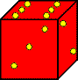

|
The concept of a rolling block maze was invented by Richard Tucker in the fall of 1998. Tucker is a British software developer and puzzle designer. One of his creations is the mechanical puzzle “King’s Court,” published by Pentangle. Tucker’s original maze was first presented in a column I wrote in the December 1998 Mensa Bulletin. It was also shown on my web site and, most importantly, on Ed Pegg Jr’s web site, www.mathpuzzle.com. Ed’s site created something of a craze for this type of maze. Many people began creating these mazes using blocks with ever weirder shapes. It was the sort of collaborative effort that could only happen on the Internet. I’ll discuss the development of rolling-block mazes and I will present several of them. I’ll also provide links to people who are creating more of these mazes. |
||||
|
Tucker said that he based his original maze on my rolling-cube mazes, but clearly there are a lot of differences. In a rolling-cube maze, a single die rolls from square to square, and it is the pip value on top of the die that determines where it can move. In a rolling-block maze there are no pips; it is the shape of the block that determines how it can move. The rules for these mazes are therefore simpler and clearer, though the mazes are capable of great complexity. You can click here for a page with a sampling of the older rolling-cube mazes. That page in turn has a link to a page of much older rolling-cube puzzles. This is getting complicated, so let me summarize this history: Rolling-cube puzzles were precedents to my rolling-cube mazes, and these mazes were precedents to Tucker’s rolling-block mazes. |
 | |||
|
|
To travel through the first four of these mazes, you’ll need a 2x1x1 block. An easy way to construct it is to take two dice and wrap them together with Scotch tape. The pips on the dice have no meaning, so it doesn’t matter which faces of the two dice you put together. Your block should look something like the picture at the left. Well, it won’t really look that bad. That’s just the best picture I can draw using MS Publisher. |
Richard Tucker’s Original Rolling-Block Maze
| Besides creating the block for this maze, you also have to print out a full-size diagram of the maze. You can click here to go to that diagram and then print it. |